这个是探究 Webpack 本质的系列文章，会详细讲解如何手写一些源码如 Webpack, loader, plugin 等等，本文主要讲解的是如何手写 plugin
webpack 流程
在手写 webpack plugin 之前，需要了解一下的是 webpack 整个流程是怎么样的，为了方便起见，这里用几张图来概括下
- 整体的流程图
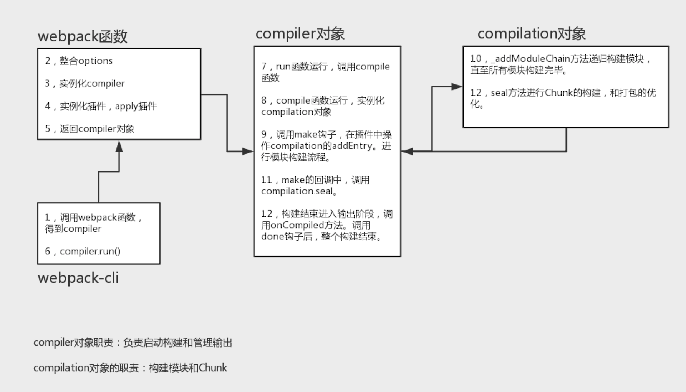 compilation对象
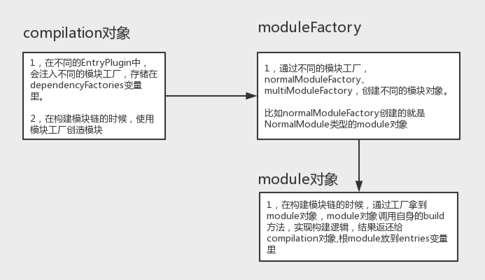
为什么只是用这两张图呢，因为这是 webpack 运行流程中最重要的两个部分。我们对 webpack 的印象是什么，基本上 webpack 是以下这么个大致的流程
- 整合配置
options - 实例化
compiler对象 - 实例化所有的插件(这里包括内置的以及自己配置的)，调用其
apply方法 - 返回
compiler对象 - 执行
complier对象的run方法
而在 webpack 的内部(这里主要说它的 compiler 对象做了啥事)，它会经历大致如下的流程(以 SingleEntryPlugin 为例)
- 调用
beforeRun钩子 - 调用
run钩子 - 调用
compile方法(调用beforeCompiler钩子 -> 调用compile钩子 -> 实例化compilation对象 -> 调用thisCompilation以及compliation钩子 -> 执行make钩子 ->seal封装 -> 调用afterCompile钩子) - 编译结束后会
run方法会执行onCompiled回调，在这个回调中会先调用shouldEmit钩子做判断，成功执行emitAssets然后调用emit钩子输出文件，失败则调用done钩子结束
再细一点，我们深入到 compilation 里，看看在实例化 compilation 对象里面做了啥
- 调用
addEntry钩子，调用完毕后执行其回调通知make钩子插件编译完成 - 调用
addEntry钩子时会执行_addModuleChain方法(根据dep拿到moduleFactory-> 调用moduleFactory.create拿到module-> 调用buildModule方法构建模块依赖 -> 调用afterBuild方法递归用模块工厂创建依赖的模块)
从以上的描述我们可以看到，webpack 的一个基本流程就是 读取配置， 实例化 compiler 时会调用各种钩子以及回调函数, 最后再去挂载相应的插件
所以插件是怎么回事
webpack 中，如果要写自己的插件，其实就是利用 发布订阅模式来写的。因为在 webpack 里面有很多的事件，我们通过 “监听” 这些事件后去执行相应的回调就好，这样说是不是很像前端页面中的交互逻辑呢。是的，基本上原理是相似的。所以插件一般都是这么写
class TestPlugin { |
在 webpack 使用的钩子中，很大部分都是依赖 tapable 这个库，而这个库的作用就是为 plugin 创建钩子用的，它里面会有类似 XXXHook 类型的钩子，有同步的也有异步的。里面的 tap 方法就是用于 订阅事件。代码 compiler.hooks.compilation.tap() 就是当 compilation 这个钩子被触发时就会去执行 tap 里面的回调。
手写文件列表插件
这个插件主要就是将 webpack 最后 emit 时输出到终端的内容做一个 “拦截”，然后将其输出到一个设置的 filename 文件中。
注意这里还要安装
html-webpack-plugin插件
class FileListPlugin { |
这里我们就知道了为什么要知道 webpack 的流程才能写插件了，如果要做一个文件列表的插件，那么就应该是在 文件发射之前做，而不是在 webpack 调用其他的钩子的时候做
手写内联 webpack 插件
这个所谓的内联插件实际上的功能就是将外链的标签变成内联的，主要体现在
- 将
link标签变成style标签，然后里面填充的是引入的 css 的内容 - 将
script标签填充引入的script文件内容 - 删除掉已经生成的没必要引入的文件
首先还需要安装三个插件 css-loader 、mini-css-extract-plugin 以及 html-webpack-plugin/next
yarn add css-loader mini-css-extract-plugin html-webpack-plugin/next |
webpack 配置如下
const path = require('path') |
然后是关键的 InlineSourcePlugin 插件
// 因为最后是改变 html 的 tag 然后插入到 html 中的，所以这里会使用到 |
其实这里整体的逻辑很简单，就是找出 index.html 中的 link 标签以及 script 标签，将其的 innerHTML 替换为对应文件的源码而已。从 compliation 这个对象里面找对应的字段然后做对应的修改即可。但是这里的重点是，应该在哪里或者说是哪个钩子里面去用？这里就用到了 html-webpack-plugin 这个插件了，众所周知这个插件的作用是 简化 html 文件的创建的，而且这个插件本身也提供了一些钩子给开发者在基于这个插件的基础上再开发插件。去看 html-webpack-plugin 的官方文档，在 plugin.js 这个小标题下可以找到对应插件的写法，上面就是它说明的提供的一些钩子。不过这里不是用 beforeEmit 这个钩子，因为我们想要的是要修改标签，理所当然的就是跟 tag 相关的 hooks 了。这里有两个 tag，一个是 alterAssetTags，另一个是 alterAssetTagGroups，这里我们选择的是 alterAssetTagGroups，因为我们重点是在 head 以及 body 上找标签，而且为了之后能修改更多的标签，选这个比较靠谱。选择了之后将 beforeEmit 改为 alterAssetTagGroups 就可以整活了, 后面就是根据 data 的属性去做相应的修改， processTags 完成之后调用 cb 回调，代码修改执行完毕。
这里还有一张 html-webpack-plugin hooks 图，以供参考
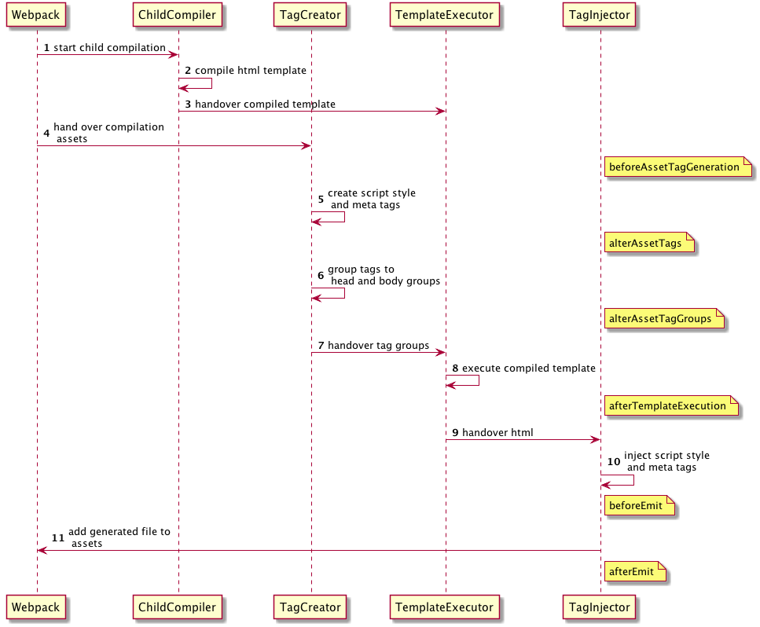
手写打包自动发布插件
这个插件的主要功能就是将打包后的文件(就是 dist 目录下的)放到 cdn 服务器上。然后页面中就直接引用 cdn 的文件就可以了。这里使用免费的 七牛云 来做
首先需要安装 qiniu
yarn add qiniu |
webpack 配置文件设置 output 的 publicPath
output: { |
然后写一个 upload-plugin.js 在 plugin 目录，webpack 配置文件引入和使用
const UploadPlugin = require('./plugins/upload-plugin') |
然后是 upload-plugin.js 文件
const path = require('path') |
这里的整体逻辑很简单，就是先初始化 qiniu 的一些参数，然后利用其 formUploader 对象进行表单方式的文件上传。而因为是在 发射文件之后 才采取的操作，所以这里就使用 afterEmit 这个 hooks，传的参数里面 compilation 对象的 assets 属性有对应的文件名和其对应的内容。拿到这个文件路径之后就将其 push 到一个 promise 数组里面，最后再整体返回(因为这里使用的是 tapPromise)。在文件上传代码的核心部分，就是利用 qiniu 表单上传代码 来做的，本质上就是返回了一个 promise。在 formUploader.putFile 这个函数中，有几个参数
- uploadToken: upload 的 token，主要根据
accessKey和secretKey生成的，用于身份的验证 - filename: 这个相当于文件的
key - localFile: 这个要上传的本地文件的
value，就是文件路径，与上面的filename对应 - putExtra: qiniu.form_up.PutExtra() 对象(意义不明)
这里主要 resolve 的是 respBody 这个数据。这样整体的逻辑就算完成。
补充(在七牛云添加 cdn)
这里可能有些小伙伴不知道如何在七牛云添加 cdn 域名。下面我来说下步骤
首先你需要有一个七牛云账号，在注册完账号后，点击主页的
管理控制台进入控制台进入
管理控制台后，点击左边的cdn

然后点击
域名管理
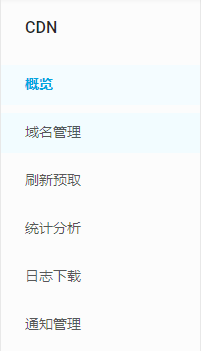再点击
添加域名
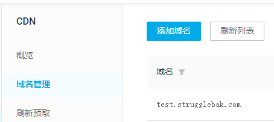然后在
加速域名那块输入要加速的域名
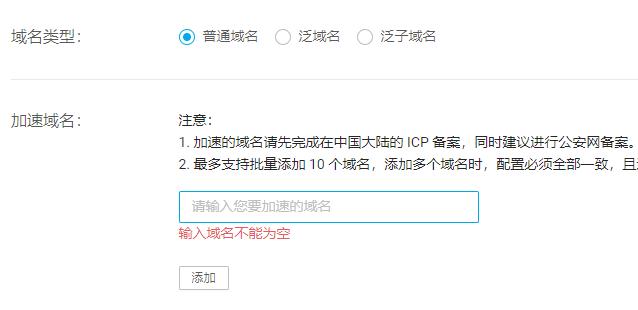这里需要注意的是，你目前的域名已经注册并且备过案了!!!，比如我的
strugglebak.com这个域名是备过案的才能用。
我这里输入的要加速的域名是test.strugglebak.com，其中test表示 主机记录，你也可以随便取啥名再点击
创建
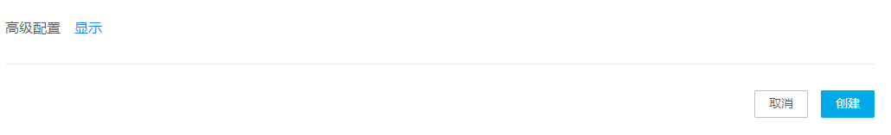跳回到
域名管理上，鼠标悬浮到你刚创建的域名上(test.strugglebak.com)，复制CNAME
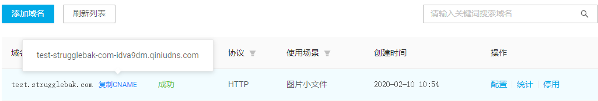然后在自己的服务器在对应的域名上添加
解析记录(因为我这里通常就是用腾讯云小程序搞的，所以截图是小程序的手机截图)
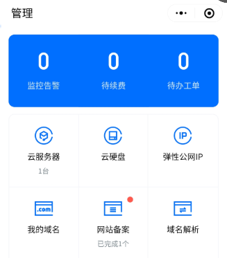点击
域名解析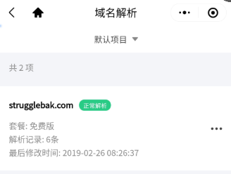
点击
添加解析记录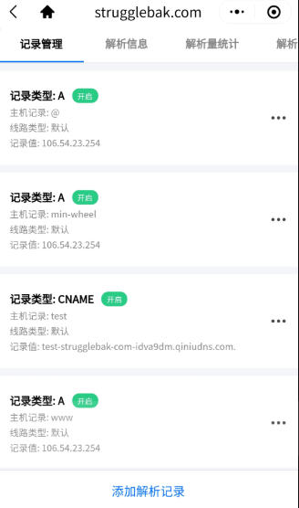
然后填写
主机记录以及记录值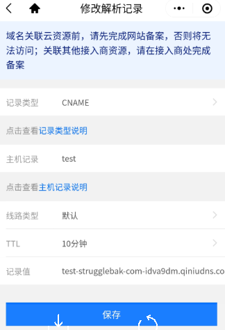
其中
test对应你设置的七牛云bucket的外链，而记录值就是CNAME最后在你的七牛云
对象存储中，在对应的bucket中设置外链
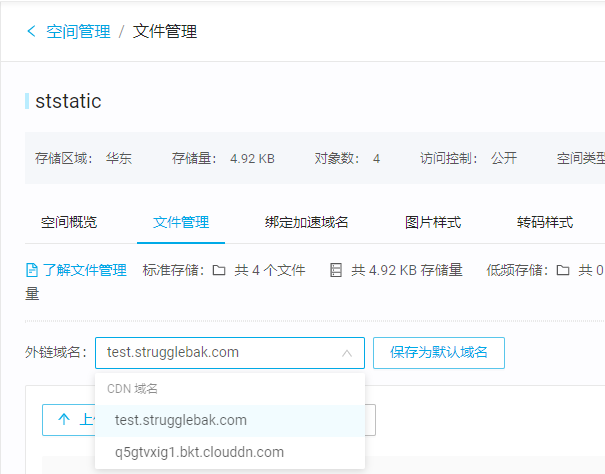
如果最后看到 cdn 外链的下面的图，则说明设置成功
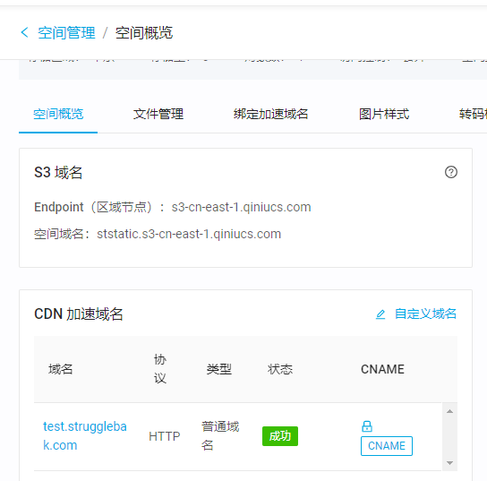
所以当你在访问 test.strugglebak.com/xxx文件时，就相当于在访问 test-strugglebak-com-idva9dm.qiniudns.com/xxx文件，效果就是会先访问你的服务器，然后再转到七牛的服务器上访问文件。
总结
由以上的内容我们知道了，在写一个 webpack 的插件之前，最重要的是要了解一个流程是怎么走的，都是利用 webpack 的钩子或者其他插件本身的钩子来进行编写。注意 webpack 插件的本质是利用了 发布订阅 的模式。我们订阅了这个事件后，执行对应的回调，并将执行回调的结果再传回给 webpack，最终结果会体现在打包的文件上。这样 webpack 就完成了对插件的加载以及处理。